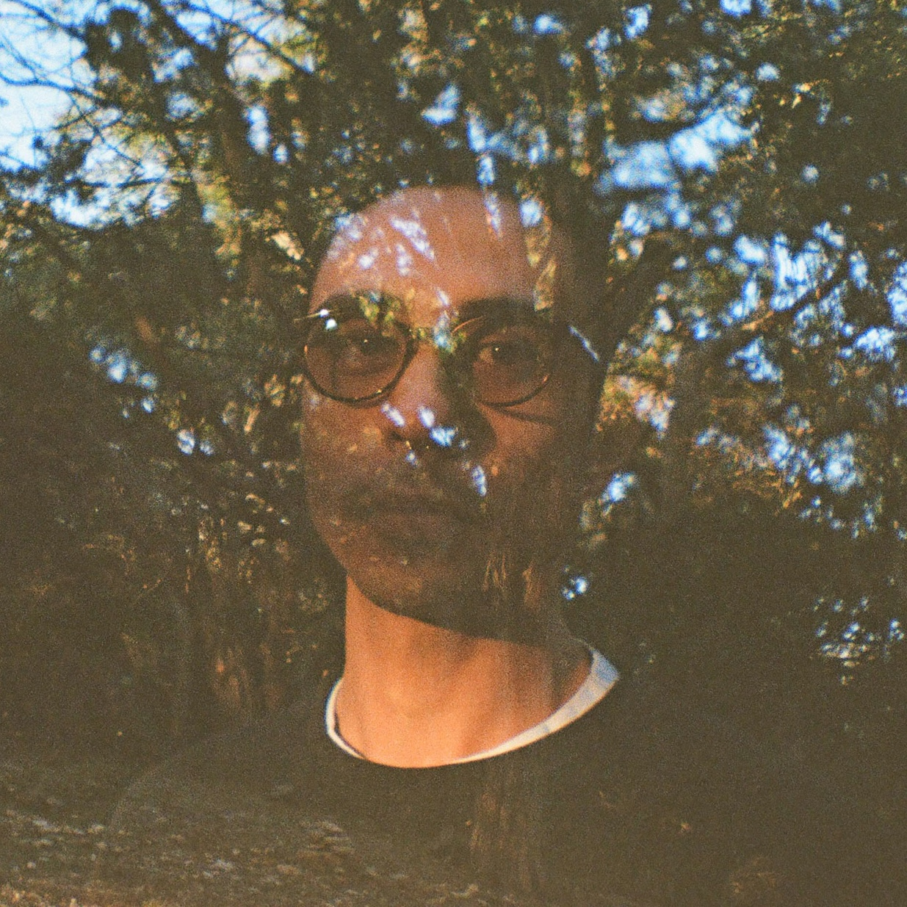

Dom Ferris, Producer
Experience
-
Content Producer
Riot Games, Teamfight Tactics | April 2024 - October 2025
I produced seasonal and evergreen publishing content for social media, broadcast, digital storefronts, and in-game platforms for the world’s #1 PC strategy game, Teamfight Tactics.
See details › Hide details ‹-
Facilitated the creation of creative global marketing assets across multiple disciplines for overlapping and layered campaigns; delivered on time, within budget, following brand guidelines, and up to Riot’s standard of quality
-
Coordinated and collaborated with teammates and vendors, maintaining partner relationships to meet simultaneous deadlines in an ever-evolving, fast-paced, and competitive environment
-
Aligned autonomous teams on both the publishing and game teams with visibility towards complex, cross-business marketing activations centered around Riot's strategic publishing priorities
-
Prepared creative assets and technical metadata for Teamfight Tactics’ 28 regions worldwide in collaboration with the Localization and Release teams
-
Created cross-functional program plans with teams such as Game Production, Operations, User Acquisition, Growth, Gameplay Capture, Video Production, and leadership
-
Assisted fellow producers to improve team effectiveness by sharing knowledge, establishing efficient workflows, identifying pain points, and fostering transparency
-
Ensured quality from ideation to final approval by conducting QA checks with ascending reviews and following industry best practices for go-to-market releases
Campaigns:
- Set 16: Lore & Legends (2025)
- Set 15: K.O. Coliseum (2025)
- Set 14: Cyber City (2025)
- Set 13: Into the Arcane (2024)
- Set 12: Magic N' Mayhem (2024)
Skills: Creative Marketing · Content Production · Cross-functional Coordination · Program Management · Project Delivery · Creative Problem Solving · Airtable · Notion
-
-
Program Manager
Culprit Underwear | September 2023 - April 2024
I built and maintained Culprit's mobile app, redesigned its Shopify store, and optimized operations and quality assurance in collaboration with Maker, Tapcart, and Amazon.
See details › Hide details ‹-
Managed Maker, Amazon, and Tapcart relations and strategies to increase conversion and revenue
-
Collaborated with Founders, COO, and marketing to ensure accurate brand vision and messaging
-
Utilized VWO for A/B and split testing to optimize conversation rates across all store pages
-
Coordinated with marketing's initiatives to schedule simultaneous project updates
-
Optimized Shopify catalog with smart collections to use across all sales channels
-
Oversaw and designed user interface for Culprit's mobile app
-
Implemented and execute standardized quality assurance practices
Skills: Program Management · Cross-functional Coordination · Responsive Web Design · Mobile Application Development · Mobile Application Design · User Interface Design · User Interface Prototyping · Conversion Optimization · Catalog Management · E-Commerce · Shopify · Figma
-
-
Product Manager
Sage Systems | February 2023 - July 2023
I streamlined Pain Academy's onboarding, significantly reducing its average completion time. I also led branding, design, and WordPress development for Feel Good's initial online course.
See details › Hide details ‹-
Reworked Pain Academy's onboarding, enhancing overall user experience by combining multiple legacy processes into one seamless Quick Start, improving first signup to completion from 2+ weeks to 6.1 hours on average
-
Branding, UI design, and WordPress development for the initial Feel Good 12-week online course
Skills: User Interface Design · Product Development · Responsive Web Design · Graphic Design · Front-end Development · User Experience · Product Design · WordPress · Web Design · Cascading Style Sheets
-
-
User Interface Engineer
Coates Group | June 2021 - February 2023
I built UI components for national Dunkin' and McDonald's campaigns reaching 5,000+ locations. I also streamlined operations via remote debugging, technical guides, and CMS management.
See details › Hide details ‹-
Developed & deployed responsive style guides and functional components to support 20+ annual national campaigns for brands such as McDonald's, Dunkin, and Chick-fil-A, reaching over 5,000 locations across North America
-
Contributed to development of industry-standard frameworks, leveraging skills in JavaScript ES6, MVC Framework, React, Svelte, Web Sockets and other modern technologies
-
Utilized SSH for tunneling into remote devices, enabling troubleshooting and issue resolution for production support
-
Authored comprehensive technical documentation, totaling 5 detailed guides, which led to a reduction in support issues related to documentation and streamlined operations for the team and stakeholders
-
Participated in Agile ceremonies, playing a role in drafting & estimating user stories, contributing to the delivery of 10+ sprints & 100+ tasks
-
Contributed to both polyrepo and monorepo environments, underlining adaptability and commitment to code uniformity
-
Authored UI components and interactive design concepts with a composite architecture approach
-
Supported delivery of various web apps to McDonald's WorldWide Convention digital screens, showcasing innovative smart restaurant tech to over 100,000 attendees
-
Integrated third-party API to web application, introducing client Point of Sale data for pricing to manage dynamic price data and product inventory. Integration increased data accuracy, enabling client control
-
Demonstrated expertise in asset management, editing media and videos to optimize content delivery
-
Led training sessions with internal content management teams, focusing on equipping users with system knowledge and best practices
-
Maintained product quality standards through QA processes, fostering collaboration through regular code reviews and peer programming sessions with engineering peers
-
Authored and published web content through Switchboard CMS, consistently enhancing customer experiences across production digital channels
Skills: User Interface Design · Front-end Development · Responsive Web Design · JavaScript ES6 · Styled Components · Relational Databases · Graphic Design · Svelte · Adobe Photoshop · Pair Programming · HTML5 · Cascading Style Sheets · SCSS · Git · React.js
-
-
Web Developer
Page Bird | December 2020 - February 2021
I maintained 30+ static sites, built new web pages, and resolved support tickets for Page Bird clients using a Jekyll and Ruby on Rails stack.
See details › Hide details ‹-
Responsible for building and maintaining 30+ static websites with Jekyll, Ruby on Rails, Liquid, Stimulus.js, PostgreSQL, HTML, CSS, and JavaScript for Page Bird's clients
-
Work asynchronously with the development team to handle tickets and provide overall customer support
Skills: User Interface Design · Responsive Web Design · Front-end Development · Ruby on Rails · Relational Databases · Object-Oriented Programming · Full-Stack Development · Application Programming Interfaces · Git · GitHub · Graphic Design · Heroku · Netlify · Adobe Photoshop · HTML5 · Continuous Integration & Continuous Delivery · Pair Programming · Web Design · SCSS · Cascading Style Sheets
-
-
Volunteer Web Developer
Spicy Green Book | December 2020 - June 2021
I built pages for Spicy Green Book using React Native, Next.js, and Expo. I collaborated with the team to troubleshoot and implement features that supported Black-owned business growth.
See details › Hide details ‹-
Build and style component-based pages with React Native, Next.js, and Expo for web and native platforms
-
Collaborate with the Founder, Director of Technology, and other volunteers to handle issues and add new features to support Spicy Green Book's businesses
Skills: User Interface Design · Responsive Web Design · Front-end Development · React.js · Relational Databases · Object-Oriented Programming · Git · GitHub · HTML5 · Continuous Integration & Continuous Delivery · Web Design · SCSS · Cascading Style Sheets
-
-
Director/Editor
Freelance | Feb 2014 - Jan 2020
I took on various creative roles including director, editor, and producer for digital series, promotional material, music videos branded campaigns for production companies, local musicians, and major publications.
See details › Hide details ‹-
Directed episodic branded content for Seventeen Magazine, Teen Vogue, CoverGirl, and more with 70+ person sets for digital ad campaigns across YouTube and other major social platforms featuring talent such as Becky G, Elaine Welteroth, Phillip Picardi, and more
-
Directed music videos and documentary shorts for brands such as LANDR, Sofar Sounds, and Breather featuring musicians such as Allee Willis, Jesse Boykins III, Bonobo, Shaun Ross, and more
-
Edited the official music video for "Upside Down" by The Story So Far, garnering over 4 million views
-
Edited Geena Davis's Bentonville Film Festival 5-Year Anniversary sizzles
-
Edited episodic documentary episodes for NBC's Titan Games hosted by Dwayne "The Rock" Johnson
-
Edited a short music film for Airstream featuring musician Marty O'Reilley & the Old Soul Orchestra following Marty's songwriting process from beginning to end
-
Edited spec commercials for brands such as Pelican, Powerade, and DroneMax for Tuff Contender
Skills: Creative Marketing · Film Production · Directing · Video Post-Production · Team Management · Creative Problem Solving · Pre-production · Video Editing · Adobe Premiere Pro · Adobe After Effects · Content Production · Graphic Design · Adobe Photoshop · Adobe Lightroom · Photography
-
-
Post Production Supervisor
Viacom | Dec 2017 - Aug 2018
I oversaw end-to-end post-production for WHOSAY's multi-million dollar ad campaigns. I managed freelance editor teams, vendors, QA, and final asset delivery for brands like Google and McDonald's.
See details › Hide details ‹-
Supervised post production and coordinated with production, art department, and campaign managers for all in-house WHOSAY productions from pre-production to final delivery for global, multi-million dollar advertisement campaigns for brands such as Google Pixel, McDonald’s, Procter & Gamble, Target, Pampers, Bayer, Folgers, MTV, Super Bowl, H&M, Buffalo Wild Wings, and more
-
Organized incoming production media and prepared projects for a team of freelance editors, managing and assisting them throughout post production while following client notes from all rounds of revisions
-
Maintained relationships and coordinated with vendors to handle specialized post production tasks such as visual effects, coloring, audio mixing & mastering, voice-over narration, music composition, and transcribing
-
Finishing, quality assurance, and delivery of all final video assets for broadcast, web, and various social formats
-
Ensured each client’s brand and legal guidelines were strictly followed for accurate client representation
-
Followed industry-standard practices for server maintenance, data management, and archiving
Skills: Creative Marketing · Video Post-Production · Cross-funtional Team Leadership · Creative Problem Solving · Video Editing · Adobe Premiere Pro · Film Production · Pre-production · Graphic Design · Adobe Photoshop · Adobe After Effects · Photography
-
-
Lead Editor
Super League Gaming | Feb 2017 - Nov 2017
I oversaw post-production, led freelance editors, and edited video content for partnered games like League of Legends and Minecraft, working closely with Marketing to ensure timely, cohesive messaging.
See details › Hide details ‹-
Edited all promotional, narrative, and internal video content for games such as League of Legends and Minecraft
-
Coordinated post production with the Creative Producer from pre-production to final delivery
-
Managed a team of freelance editors to meet simultaneous deadlines
-
Collaborated with the marketing team to ensure strong and accurate messaging
Skills: Creative Marketing · Content Production · Video Post-Production · Team Management · Creative Problem Solving · Film Production · Video · Adobe Premiere Pro · Adobe After Effects · Pre-production · Graphic Design · Adobe Photoshop · Adobe Lightroom · Photography · Image Editing · Directing
-
Education
-
Le Wagon
Full-Stack, Computer Programming, 2020
Intensive coding bootcamp learning JavaScript ES6, Ruby, Ruby on Rails, HTML5, CSS, Sass, SQL, PostgreSQL, relational databases, object-oriented programming, test-driven development, AJAX, API integration, parsing, scraping, UI & UX, Figma prototyping, Git, GitHub, and technical workflow.
-
Columbia College Chicago
Bachelor of Fine Arts, Cinema Arts & Sciences, 2014
Directing and Screenwriting focus
-
Attended the Producing Semester in LA program Sep 2013 - Oct 2013
-
Guest speaker for Spring 2025's Producing Semester in LA "Speaker Series"
-
College of DuPage
General Education, 2011
About

I am a flexible producer with a combination of creative vision, technical proficiency, and strategic project management. I aim to bridge the gap between creative and technical teams to deliver impactful content for educational and creative entertainment industries.
Organizational Skills: Program Management, Project
Management, Documentation, Retrospectives, Technical Workflow,
Agile, Scrum, Kanban, Asset Management, Archiving, G Suite,
Google Drive, Microsoft 365, OneDrive, Jira, Airtable, Notion,
Obsidian, Slack, Microsoft Teams, Discord
Creative Skills: Narrative & Documentary Film Production,
Content Production, Creative Direction, Marketing & Strategy,
Branding, Photography, Graphic Design, UI & UX Design, Figma,
Adobe Photoshop, Adobe Lightroom, Adobe Premiere Pro, Adobe
After Effects, Adobe Media Encoder
Technical Skills: VS Code, JavaScript ES6, React, Ruby,
Ruby on Rails, Object-Oriented Programming, Test-Driven
Development, Pair Programming, AJAX, PostgreSQL, SQL, Relational
Databases, APIs, HTML5, CSS3, Sass, Bootstrap, JSON, Scraping,
Git, GitHub, Heroku
* Resume and references available upon request